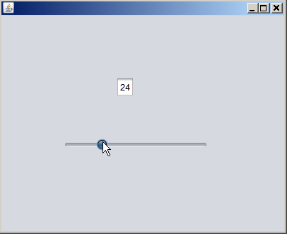

Apache NetBeans
Apache NetBeansLatest release
JavaアプリケーションでのBeansとデータのバインディング
| This tutorial needs a review. You can open a JIRA issue, or edit it in GitHub following these contribution guidelines. |
このガイドでは、NetBeans IDEでサポートされているJavaアプリケーションでのBeans Binding機能とデータのバインディング機能の概要を示します。

Figure 1. このページの内容は、NetBeans IDE 7.1、7.2、7.3、7.4および8.0に適用されます
このチュートリアルを完了するには、次のソフトウェアとリソースが必要です。
| ソフトウェアまたはリソース | 必須バージョン |
|---|---|
バージョン7.1、7.2、7.3、7.4または8.0 |
|
バージョン6以降 |
概要: NetBeans IDEでのBeans Binding
Beans Bindingライブラリがリリースされるまで、UIコンポーネントをデータベースに接続したり、コンポーネントのプロパティ値の同期を保持するのは面倒でした。たとえば、標準データベースのデータをJTableに表示するには、データベースとJTableの接続を処理するユーティリティ・クラスを手動で作成する必要がありました。また、異なるBeanのプロパティの値(たとえばJTextFieldの値とビジュアルBeanのレンダリング)の同期を保持するには、リスナーやイベント・ハンドラを手動でコーディングする必要がありました。
Beans Bindingライブラリによって、このすべての処理が簡単になり、また標準化されます。どのコンポーネントのどのプロパティを同期する必要があるのかを指定する数行のコードを記述するのみで、残りの処理はBeans Bindingライブラリによって実行されます。NetBeans IDEでは、Beans Binding機能はGUIビルダーに統合されているので、アプリケーションの視覚的なデザインが完成したらすぐに動作をコーディングできます。
このガイドでは、IDEでのBeans Bindingの主要な機能について説明します。
プロパティ間のバインディング
Beans Bindingは、基本的にイベント・リスナーやイベント・ハンドラのコードを使用せずにBeanのプロパティを接続する方法です。
Beans Bindingの概念とIDEに用意されている機能を示すために、ユーザーがスライダを調整してテキスト・フィールド内の数値を変更できる単純な例を使用します。
例を設定する
-
IDEで、「ファイル」>「新規プロジェクト」を選択します。
-
「Java」カテゴリを選択し、「Java Application」テンプレートを選択します。「次」をクリックします。
-
ウィザードの名前と場所ページで、次の操作を行います。
-
プロジェクト名に「
NumberSlider」と入力します。 -
「ライブラリの格納用に専用フォルダを使用」チェックボックスは選択されていない状態のままにします。
-

-
「メイン・クラスの作成」チェックボックスを選択解除します。
-
「終了」をクリックしてウィザードを終了し、プロジェクトを設定します。
-
「プロジェクト」ウィンドウで「NumberSlider」プロジェクト・ノードを右クリックし、「新規」>「JFrameフォーム」を選択します。
-
(「JFrameフォーム」が「新規」メニューにない場合は、「その他」を選択します。次に、新規ファイル・ウィザードで「Swing GUIフォーム」カテゴリを選択してから「JFrameフォーム」テンプレートを選択します。)
-
ウィザードの名前と場所ページで、次の操作を行います。
-
クラス名に「
NumberSliderFrame」と入力します。 -
パッケージ名に「
numberslider」と入力します。
-

-
「終了」をクリックしてウィザードを終了し、フォームを作成します。
``NumberSliderFrame.java`` が編集領域にデザイン・モードで開きます。
-
パレットの「Swingコントロール」セクションからスライダ・コンポーネントをデザイン領域までドラッグします。「パレット」ウィンドウが開いていない場合は、「ウィンドウ」>「パレット」を選択します。
-
パレットから、テキスト・フィールド・コンポーネントをデザイン領域までドラッグします。
フォームは次のスクリーンショットのようになります。この例では、配置は重要ではありません。

ソースとターゲット
例を設定したので、バインディングを作成します。ただし、最初に、バインディングの_ソース_にするコンポーネントと_ターゲット_にするコンポーネントを決定する必要があります。バインディングのソース・コンポーネントは、プロパティ値のバインディング元です。
GUIエディタでバインディングを行う場合は、ターゲットでバインディングを開始してから、「バインド」ダイアログ・ボックスでソースを宣言します。
この例では、JSliderにデフォルトの値の範囲があるので、このコンポーネントをソースとして使用します。
*注意: *バインディングを2方向(読取り/書込み)にして、ターゲットの変更内容がソースに自動的に反映されるようにできます。ただし、最初のバインディングの方向は常にソースからターゲットになります。詳細は、詳細なバインディング構成の項で更新モードに関する説明を参照してください。
スライダをテキスト・フィールドにバインドする
-
テキスト・フィールド・コンポーネントを右クリックし、「バインド」>「テキスト」を選択して「バインド」ダイアログ・ボックスを開きます。
-
「ソースをバインディング」コンボ・ボックスで「
jSlider1」を選択します。 -
次のイメージに示すように、「式をバインディング」コンボ・ボックスで「
value int」を選択します。
-
「OK」をクリックします。
これで、スライダの「 value 」Beanプロパティがテキスト・フィールドの「 text 」の値にバインドされました。
デザイン領域で、テキスト・フィールドに値 50 が表示されます。この値は、スライダが中央の位置にあり、スライダのデフォルトの値の範囲が0から100であることを反映しています。
これでアプリケーションを実行し、バインディングが機能するところを確認できます。
「実行」>「ファイルを実行」を選択してファイルを実行します。
アプリケーションが別のウィンドウで起動します。実行中のアプリケーションでスライダを調整し、テキスト・フィールド内の値が変わることを確認します。

カスタムBeansのバインディング
前の項では、パレットからフォームに追加した2つの標準のSwingコンポーネントのプロパティをバインドしました。他のBeanのプロパティもバインドできます。ただし、これを行うには、いくつかの手順を実行してBeanのバインディング・コードを生成するIDEの機能を使用可能にする必要があります。次の方法のいずれかを行い、Bean用にIDEのバインディング機能を使用可能にできます。
-
Beanをパレットに追加し、標準のSwingコンポーネントと同じようにフォームに追加できるようにします。
-
Beanクラスをプロジェクトに追加し、Beanをコンパイルします。
「パレット」ウィンドウにBeanを追加する
-
Beanがコンパイルされていることを確認します。
-
「ツール」>「パレット」>「Swing/AWTコンポーネント」を順に選択します。
-
Beanの新規パレット・カテゴリを作成する場合は、Beanを追加する前に「新規カテゴリ」をクリックし、使用する名前を入力します。
-
「JARから追加」、「ライブラリから追加」、または「プロジェクトから追加」をクリックし、ウィザードを完了してBeanを追加します。
プロジェクトからBeanを追加する
-
プロジェクトのウィンドウでBeanのノードを右クリックし、「ファイルをコンパイル」を選択します。
-
Beanをフォームまでドラッグします。
これで、Beanが「インスペクタ」ウィンドウに表示されます。Beanの任意のプロパティの「バインド」ダイアログを呼び出すことができます。
詳細なバインディング構成
このチュートリアルの最初の項の例では、デフォルト動作の一部分を使用した簡単なバインディング方法を示しています。ただし、バインディングの構成の変更が必要になる場合があります。その場合は、「バインディング」ダイアログ・ボックスの「詳細」タブを使用できます。
このダイアログ・ボックスの「詳細」タブには、次のフィールドがあります。
-
*名前。*バインディングの名前を作成でき、これにより、バインディングをより柔軟に管理できます。名前はバインディングのコンストラクタに追加され、バインディングの
getName()メソッドで参照できます。 -
*モードを更新。*プロパティの同期を保持する方法を指定します。可能な値は次のとおりです:
-
*常に同期(読取り/書込み)。*ソースまたはターゲットのいずれかに変更を加えると、もう一方が更新されます。
-
*ソースから読取りのみ(読取り専用)。*最初にソースの値が設定されたときのみターゲットが更新されます。ソースに変更を行うと、ターゲットも更新されます。ターゲットに変更を加えても、ソースは更新されません。
-
*ソースから一度読取り(一度読取り)。*ターゲットとソースが最初にバインドされたときのみターゲットが更新されます。
-
ソースの更新時期 (JTextFieldおよびJTextAreaコンポーネントの
textプロパティでのみ使用可能)。プロパティを同期する頻度を選択できます。 -
調整を無視 (JSliderの「
value」プロパティ、JTableおよびJListの「selectedElement」プロパティ、JTableおよびJListの「selectedElements」プロパティでのみ使用可能)。このチェックボックスを選択すると、あるプロパティに対して行われた変更は、ユーザーが変更を終了するまで、もう一方のプロパティに反映されません。たとえば、アプリケーションのユーザーがスライダを移動させた場合、スライダの「value」プロパティがバインドされたプロパティの値は、ユーザーがマウスのボタンを離すまで更新されません。 -
*コンバータ。*バインディングされたプロパティに異なるデータ型が含まれる場合は、データ型の間で値を変換するコードを指定できます。Beans Bindingライブラリでは一般的な変換の多くを処理できますが、それ以外のプロパティの型の組合せが存在する場合は、独自のコンバータが必要な場合もあります。このようなコンバータは、
org.jdesktop.beansbinding.Converterクラスを拡張する必要があります。
「コンバータ」ドロップダウン・リストには、フォームにBeanとして追加されたコンバータが含まれています。また、省略符号ボタン(…)をクリックし、「コンバータ・プロパティの使用方法を選択」ドロップダウン・リストから「カスタム・コード」を選択して、変換コードを直接追加することもできます。
次の変換では、コンバータを用意する必要はありません。
-
BigDecimalからStringへ、StringからBigDecimalへ
-
BigIntegerからStringへ、StringからBigIntegerへ
-
BooleanからStringへ、StringからBooleanへ
-
ByteからStringへ、StringからByteへ
-
CharからStringへ、StringからCharへ
-
DoubleからStringへ、StringからDoubleへ
-
FloatからStringへ、StringからFloatへ
-
IntからStringへ、StringからIntへ
-
LongからStringへ、StringからBigDecimalへ
-
ShortからStringへ、StringからShortへ
-
IntからBooleanへ、BooleanからIntへ
-
*バリデータ。*変更をソース・プロパティに反映させる前に、ターゲット・プロパティ値の変更内容を検証するためのコードを指定できます。たとえば、整数のプロパティ値が特定の範囲内になるようにバリデータを使用できます。
バリデータは、 org.jdesktop.beansbinding.Validator クラスを拡張する必要があります。
「バリデータ」ドロップダウン・リストには、フォームにBeanとして追加されたバリデータが含まれています。また、省略符号ボタン(…)をクリックし、「バリデータ・プロパティの使用方法を選択」ドロップダウン・リストから「カスタム・コード」を選択して、検証コードを直接追加することもできます。
-
*ソースの値がNULL。*バインディングの試行時にソース・プロパティが
null値の場合、異なる値を使用するように指定できます。このフィールドは、org.jdesktop.beansbinding.BindingクラスのsetSourceNullValue()メソッドに対応します。 -
*読取り不可なソース値。*バインディングの試行時にバインディング式が解決できない場合、異なる値を使用するように指定できます。このフィールドは、
org.jdesktop.beansbinding.BindingクラスのsetSourceUnreadableValue()メソッドに対応します。
*注意: *前述のクラスやメソッドについて詳しく理解するには、IDEからBeans Bindingに関するJavadocドキュメントに直接アクセスしてください。「ヘルプ」>「Javadoc参照」>「Beans Binding」を選択します。開かれたブラウザ・ウィンドウで、「 org.jdesktop.beansbinding 」リンクをクリックし、これらのクラスのドキュメントにアクセスします。
コンポーネントへのデータのバインディング
ビジュアルSwingコンポーネントとその他のカスタムBeansのプロパティを同期する以外に、ビジュアル・コンポーネントを使用してデータベースと対話するためにBeans Bindingを使用できます。新しいJavaフォームを作成し、コンポーネントをフォームに追加したら、それらのコンポーネントをデータにバインドするためのコードを生成できます。この項では、Swing JTable、JList、およびJComboBoxの各コンポーネントにデータをバインドする方法を示します。
コンポーネントをデータベース内のデータにバインディングする前に、次の作業が行われている必要があります。
-
IDEでデータベースに接続している。
-
バインドするデータベース表を表すクラスを作成している。データをコンポーネントにバインディングするためのエンティティ・クラスの作成手順は次のとおりです。
エンティティ・クラスの作成
JTableにバインドするデータベースを表すエンティティ・クラスを作成する
-
「プロジェクト」ウィンドウでプロジェクトを右クリックし、「新規」>「その他」を選択して「持続性」カテゴリを選択し、「データベース」テンプレートから「エンティティ・クラス」を選択します。
-
ウィザードのデータベース表ページで、データベース接続を選択します。
-
「使用可能な表」列に内容が表示されたら、アプリケーションで使用する表を選択し、「追加」をクリックして「選択した表」列に移動します。「次」をクリックします。

-
ウィザードのエンティティ・クラス・ページで、「持続フィールド用のNamedQuery注釈を生成」および「持続性ユニットを作成」チェックボックスが選択されていることを確認します。

-
生成されたクラスの名前と場所をカスタマイズします。
-
「終了」をクリックします。
「プロジェクト」ウィンドウにエンティティ・クラスのノードが表示されます。
データを表すBeansへのコンポーネントのバインディング
この項では、JTable、JList、およびJComboBoxの各コンポーネントにデータをバインドする方法を示します。
フォームにデータベース表を追加し、JTableを自動的に生成してデータベース表の内容を表示する
-
「サービス」ウィンドウを開きます。
-
フォームに追加する表を含むデータベースに接続します。データベース接続のノードを右クリックし、「接続」を選択することでデータベースに接続できます。
注意: チュートリアルでは sample [app on App] データベースを使用します。このデータベースに接続するには、「サービス」ウィンドウを選択して、データベース・ノードを展開し、データベース接続ノード( jdbc:derby://localhost:1527/sample[app on APP] )を右クリックして、コンテキスト・メニューから「接続」を選択します。
ユーザーIDおよびパスワードを求められたら、 app をユーザーID、 app をパスワードとして指定します。
-
接続のノードを展開し、「表」ノードを展開します。
-
表のノードをフォームにドラッグし、[Ctrl]を押しながら表にドロップします。
JTableが作成され、その列はデータベース表の列にバインドされます。
データベース表を既存のJTableコンポーネントにバインドする
-
GUIビルダーでコンポーネントを右クリックし、「バインド」>「要素」を選択します。

-
「データをフォームにインポート」をクリックします。「データをフォームにインポート」ダイアログ・ボックスで、コンポーネントをバインドするデータベース表を選択します。「OK」をクリックします。
-
「ソースをバインディング」コンボ・ボックスで、エンティティ・クラスの結果リストを表す項目を選択します。たとえば、エンティティ・クラスの名前が
Customer.javaの場合、listオブジェクトはcustomerListとして生成されます。

-
「式をバインディング」の値は「
null」のままにしてください。 -
JTableに表示しないデータベース列がある場合は、「選択」リストでそれらの列を選択して「使用可能」リストに移動します。
-
さらにバインディングを構成するには、「詳細」タブを選択します。たとえば、バリデータやコンバータを指定したり、バインディング・ソースがnullまたは読取り不能な場合の動作を指定することができます。
-
「OK」をクリックします。
データをJListコンポーネントにバインドする
-
GUIビルダーでコンポーネントを右クリックし、「バインド」>「要素」を選択します。
-
「データをフォームにインポート」をクリックします。「データをフォームにインポート」ダイアログ・ボックスで、コンポーネントをバインドするデータベース表を選択します。「OK」をクリックします。
-
「ソースをバインディング」コンボ・ボックスで、エンティティ・クラスの結果リストを表す項目を選択します。たとえば、エンティティ・クラスの名前が
Customer.javaの場合、listオブジェクトはcustomerListとして生成されます。

-
「式をバインディング」の値は「
null」のままにしてください。 -
「式を表示」ドロップダウン・リストで、リストに表示する値を含むデータベース列を表すプロパティを選択します。
-
さらにバインディングを構成するには、「詳細」タブを選択します。
-
「OK」をクリックします。
データをJComboBoxコンポーネントにバインドする
-
コンボ・ボックスを右クリックし、「バインド」>「elements」を選択します。
-
「データをフォームにインポート」をクリックします。「データをフォームにインポート」ダイアログ・ボックスで、コンポーネントをバインドするデータベース表を選択します。「OK」をクリックします。
-
「ソースをバインディング」コンボ・ボックスで、エンティティ・クラスの結果リストを表す項目を選択します。たとえば、エンティティ・クラスの名前が
Customer.javaの場合、listオブジェクトはcustomerListとして生成されます。

-
「式をバインディング」の値を「
null」のままにして、「OK」をクリックします。 -
コンボ・ボックスをもう一度右クリックし、「バインド」>「selectedItem」を選択します。
-
ユーザーの選択によって影響の出るプロパティにバインドします。

-
「OK」をクリックして編集を保存します。
JComboBoxの_display_値を取得する方法を指定できるDetailBindingクラスは、バージョン1.2.1時点ではBeans Bindingライブラリにありません。このため、カスタム・コードを記述する必要があります。1つの方法として、次に示すようにカスタムのセル・レンダラを記述できます。
コンボ・ボックスを正しくレンダリングする
-
コンボ・ボックスを選択します。
-
「プロパティ」ウィンドウの「プロパティ」タブで「renderer」プロパティを選択します。
-
省略符号(…)ボタンをクリックします。
-
プロパティ・エディタの上部にあるコンボ・ボックスで「カスタム・コード」を選択します。
-
テキスト領域で、次のようなコードを入力します。ここで、`jComboBox1`はJComboBoxインスタンスの名前、`MyEntityClass`はエンティティ・クラス、`getPropertyFromMyEntityClass()`は、バインディングしているエンティティ・クラス内のプロパティの取得メソッドです。
jComboBox1.setRenderer(new DefaultListCellRenderer() {
@Override
public Component getListCellRendererComponent(
JList list, Object value, int index, boolean isSelected, boolean cellHasFocus) {
super.getListCellRendererComponent(list, value, index, isSelected, cellHasFocus);
if (value instanceof MyEntityClass) {
MyEntityClass mec = (MyEntityClass)value;
setText(mec.getPropertyFromMyEntityClass());
}
return this;
}
})
注意: 独自のソース・ファイルでのカスタム・レンダラを作成、ファイルをコンパイル、レンダラをフォームにドラッグ、およびこのBeanを使用するようにコンボ・ボックスのレンダラ・プロパティを設定できます。
特別なバインディング・プロパティ
Beans Bindingライブラリは一部のSwingコンポーネントに対し、必要に応じてコンポーネント自身に存在しない特別な合成プロパティを提供します。これらのプロパティは、表で選択されている行などの内容を表すもので、他のプロパティにバインドするのに役立ちます。
次のリストに、Beans Bindingライブラリによって追加される合成プロパティを示します。
| コンポーネント | プロパティ | 説明 |
|---|---|---|
AbstractButton |
selected |
ボタンの選択状態。 |
JComboBox |
selectedItem |
JComboBoxの選択項目。 |
JSlider |
value |
JSliderの値で、すべての変更を通知します。 |
value_IGNORE_ADJUSTING |
「value」と同じですが、スライダが値を調整している間は変更を通知しません。 |
JList |
selectedElement |
JListで選択されている要素で、すべての変更を通知します。ターゲットとしてJListを持つJListBindingが存在する場合は、選択されている要素はバインディングのソース・リストの要素として報告されます。そうでない場合、選択されている要素は、リストのモデルのオブジェクトとして報告されます。何も選択されていない場合、プロパティは |
selectedElements |
JListで選択されている要素を含むリストで、すべての変更を通知します。ターゲットとしてJListを持つJListBindingが存在する場合は、選択されている要素はバインディングのソース・リストの要素として報告されます。そうでない場合、選択されている要素は、リストのモデルのオブジェクトとして報告されます。何も選択されていない場合、プロパティは空のリストと評価されます。 |
selectedElement_IGNORE_ADJUSTING |
「selectedElement」と同じですが、リストの選択内容が更新中の場合、変更は通知されません。 |
selectedElements_IGNORE_ADJUSTING |
「selectedElements」と同じですが、リストの選択内容が更新中の場合、変更は通知されません。 |
JTable |
selectedElement |
JTableで選択されている要素で、すべての変更を通知します。ターゲットとしてJTableを持つJTableBindingが存在する場合は、選択されている要素はバインディングのソース・リストの要素として報告されます。そうでない場合、選択されている要素はマップとして報告されます(ここで、キーは文字列「column」と列索引から構成され、値はその列のモデル値となります)。たとえば、{column0=column0value, column1=column1value, …}などです。何も選択されていない場合、プロパティは |
selectedElements |
JTableで選択されている要素を含むリスト。すべての変更を通知します。ターゲットとしてJTableを持つJTableBindingが存在する場合は、選択されている要素はバインディングのソース・リストの要素として報告されます。そうでない場合、選択されている各要素はマップとして報告されます(ここで、キーは文字列「column」と列索引から構成され、値はその列のモデル値となります)。たとえば、{column0=column0value, column1=column1value, …}などです。何も選択されていない場合は、プロパティは空のリストと評価されます。 |
selectedElement_IGNORE_ADJUSTING |
「selectedElement」と同じですが、表の選択内容が更新中の場合、変更は通知されません。 |
selectedElements_IGNORE_ADJUSTING |
「selectedElements」と同じですが、表の選択内容が更新中の場合、変更は通知されません。 |
JTextComponent(サブクラスのJTextField、JTextArea、およびJEditorPaneも含む) |
text |
JTextComponentのテキスト・プロパティで、すべての変更を通知します(入力中も含む)。 |
text_ON_FOCUS_LOST |
JTextComponentのテキスト・プロパティで、コンポーネントのフォーカスが失われたときのみ変更を通知します。 |
text_ON_ACTION_OR_FOCUS_LOST |
JTextComponentのテキスト・プロパティで、コンポーネントがactionPerformedを通知したとき、またはコンポーネントのフォーカスが失われたときのみ変更を通知します。 |
関連項目
-
_NetBeans IDEによるアプリケーションの開発_のデータベース・アプリケーションおよびBeans Bindingでの作業

{kind=link}